INTRODUCTION - TIMING SYSTEM
- Path
- Descriptions > 10 ENGINE > 1036 TIMING SYSTEM > INTRODUCTION - TIMING SYSTEM
- Kind
- system description
- Applies to
- engines: 1.8; all production periods
- Interactive page
- https://sloeber94.github.io/elrnDB-fCrm/en/#/194002257
Applies to: engines: 1.8; all production periods
SPECIFICATIONS
Toothed belt-driven twin overhead camshaft timing system, four valves per cylinder, mechanical tappets, vane-type continuous variable valve driving system on both camshafts.
The benefits of a timing system like this are a reduction in emissions and consumption. The following are possible depending on the different load conditions:
- reduced loads
a minimum valve crossover is set because in this case the high vacuum in the intake manifold causes the reflux of a large quantity of exhaust gases with a minimum crossover.
As a result, the engine runs smoothly when idling.
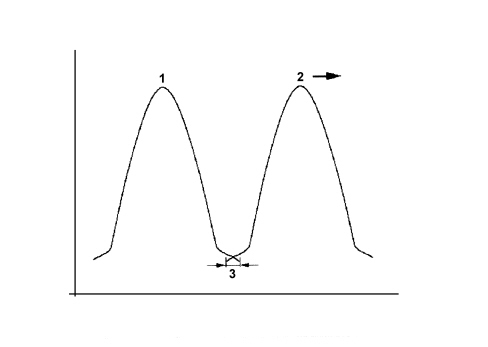
1. Inlet valve lift
2. Exhaust valve lift, moved in an "advance" direction
3. Minimum valve crossover
- medium-low loads
the valve crossovers set are greater because in these conditions the engine supports a larger quantity of residual gases. This produces a drastic reduction in nitrogen oxide emissions.
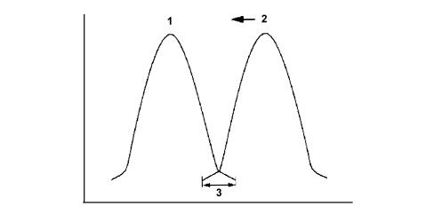
1. Inlet valve lift
2. Exhaust valve lift, moved in an "advance" direction
3. Maximum valve crossover
- heavy load
the crossover of the valves is reduced to a minimum because maximum cylinder refilling with a fresh mixture is desired as a result of the engine's increased requirements.
Vane type continuous phase transformer
The vane-type variable valve timing system allow the phase to be varied continuously on both shafts. The angular position is given by the rotor-stator drive inside the transformer. The intake side phase transformer allows a camshaft angle of no less than 60°, while the exhaust side phase transformer allows rotation of 45°. The engine management control unit determines the position of the cam through sensors on the camshafts and the crankshaft.
The stator is made to turn with the crankshaft by means of a belt whilst the rotor is connected directly to the camshaft that may move in relation to the stator.
The rotor and stator may be offset by using an electrohydraulic valve that allows the vanes between the them to be filled with fluid.
The camshaft adjustment system comprises the following components:
- Adjustment unit
- Solenoid valves
- Route of the fluid towards the solenoid valve
- Route of the fluid from the solenoid valve chamber A of the camshaft regulator
- Route of the fluid from the solenoid valve chamber B of the camshaft regulator
- Camshaft phonic wheel with timing sensor
- Camshaft phonic wheel with rpm and T.D.C. sensor
- Engine management control unit.
Electrical components for camshaft adjustment
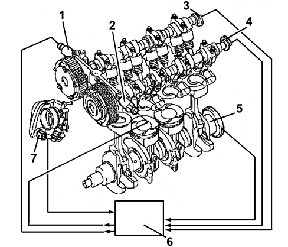
1. Hydraulic control valve electromagnetically activated by the inlet camshaft
2. Hydraulic control valve electromagnetically activated by the exhaust camshaft
3. Inlet side timing sensor
4. Exhaust side timing sensor
5. Rpm and T.D.C. sensor
6. Engine management control unit
7. Throttle valve actuator
Mechanical components for the camshaft adjustment
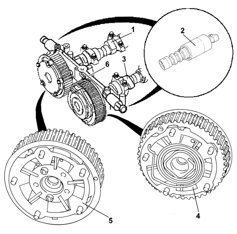
1. Inlet camshaft
2. Camshaft adjustment valve
3. Exhaust camshaft
4. Exhaust camshaft regulator
5. Inlet camshaft regulator
6. Camshaft bearings support
Operation
The engine oil is directed via a special duct directly from the oil pump, through the head, towards the camshaft bearings support (3). There is a solenoid valve for each camshaft on the camshaft bearings support to drain and refill chambers A and B for the respective camshaft regulator or for closing all the connections with a perfect seal to fix the relative position of the camshaft.
The flow of oil towards chamber B of the camshaft regulator is directed along the collar (6) of the fastening bolt (9). The flow of oil towards chamber A of the camshaft regulator is directed via the separated, decentralised, axially positioned openings (2). When the oil chambers of the inlet side or exhaust side camshaft regulator are refilled or drained, the angular position of the shafts is altered.
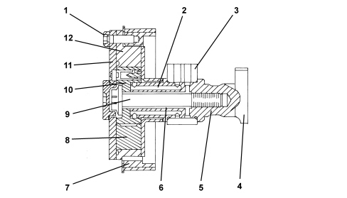
1. Bolt securing camshaft regulator cover
2. Oil duct towards chamber A of the camshaft regulator
3. Camshaft bearings support
4. Cam
5. Camshaft
6. Oil duct towards chamber B of the camshaft regulator
7. Gear driven by toothed belt
8. Partition between chambers A and B
9. Bolt securing camshaft regulator
10. Rotor
11. Camshaft regulator cover
12. Stator
Inlet camshaft regulator
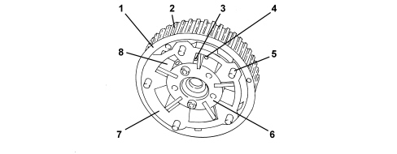
1. Inlet camshaft regulator (outer) edge
2. Gear driven by toothed belt
3. Chamber A refilling and draining port
4. Chamber B refilling and draining port
5. Bolt securing camshaft regulator cover
6. Rotor, connected to camshaft
7. Stator, hydraulically adjustable
8. Partition between chamber A and chamber B
Exhaust camshaft regulator
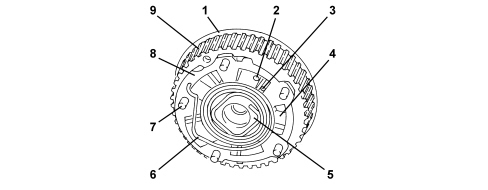
1. Exhaust camshaft regulator (inner) edge
2. Chamber A refilling and draining port
3. Chamber B refilling and draining port
4. Partition between chamber A and chamber B
5. Rotor, connected to camshaft
6. Return spring, returns the stator to the initial position when no oil pressure is applied
7. Bolt securing camshaft regulator cover
8. Stator, hydraulically adjustable
9. Gear driven by toothed belt
The solenoid valve comprises a needle cursor which is moved into 3 different positions through the electromagnetic induction of a solenoid in order to either refill or drain chambers A and B. The solenoid valve is controlled by the engine management control unit.
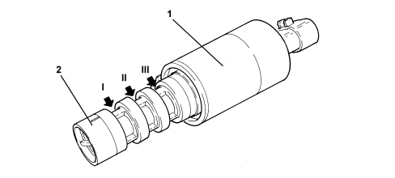
1. Solenoid
2. Needle cursor with port for connecting the splining (I) and (II) and the axial port for connecting the splining (III) with the pressure free return
Diagram showing structure of hydraulic valve
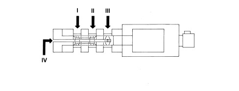
The splining (II) is connected internally with the splining (I) as a result of which the oil supply duct can be switched only once to suply chamber A or chamber B.
The splining (III) is only designed for the pressure free return (IV) from chamber B.
The 3 different positions for the cursor are illustrated below
1. The supply (II) is always connected to the pressurized oil supply. Thanks to the position of the valves illustrated in the diagram, the pressurized supply is connected with the oil directed towards chamber A in the camshaft regulator. Chamber B of the camshaft regulator is simultaneously drained through the pressure free return (III) and (IV).
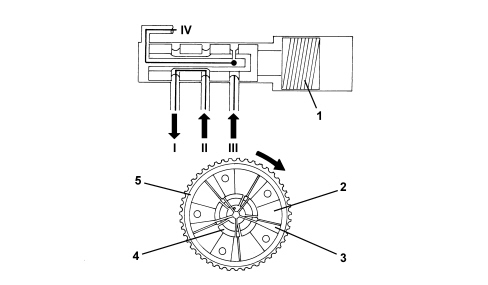
1. Hydraulic valve solenoid
2. Chamber A
3. Chamber B
4. Rotor
5. Stator
2. The supply (II) is always connected to the pressurized oil supply. Thanks to the position of the valves illustrated in the diagram, the pressurized supply is connected with the oil directed towards chamber B in the camshaft regulator. Chamber A of the camshaft regulator is simultaneously drained through the pressure free return (IV).
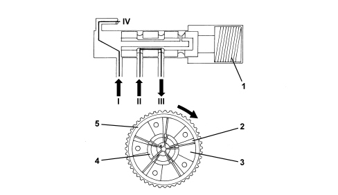
1. Hydraulic valve solenoid
2. Chamber A
3. Chamber B
4. Rotor
5. Stator
3. All the supply and return openings are closed and sealed through the position of the valves shown in the diagram. It is not possible to introduce oil into chamber A or B of the camshaft regulator or drain either of the two chambers. In this way, the position set between the stator and the rotor remains unchanged (the relative position is fixed).
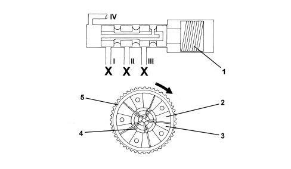
1. Hydraulic valve solenoid
2. Chamber A
3. Chamber B
4. Rotor
5. Stator